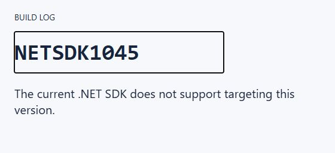
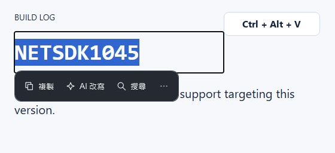
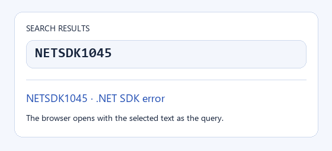

閱讀 · 離線字典
看不懂的字，
就在旁邊查。
選取英文單字或短語，點「字典」，釋義就在選字旁展開。一次查詢多本詞典，依來源閱讀，也能複製釋義留作筆記。
查詞在本機執行，不需連線。需先自行匯入支援的 StarDict 詞典；可分別啟用、停用或移除。
閱讀中的一句話
Make room for serendipity.
字典
serendipity
/ˌser.ənˈdɪp.ə.ti/
意外發現美好事物的機緣；意外之喜。
依詞典來源分組可複製釋義
Windows 選字工具列
在瀏覽器或文字編輯器反白文字，按 Ctrl + Alt + V 叫出浮動工具列，再點「搜尋」，就能在瀏覽器查詢選好的文字。
解壓即可執行 · 內含 .NET · 未簽章預覽版





閱讀 · 離線字典
選取英文單字或短語，點「字典」，釋義就在選字旁展開。一次查詢多本詞典，依來源閱讀，也能複製釋義留作筆記。
查詞在本機執行，不需連線。需先自行匯入支援的 StarDict 詞典；可分別啟用、停用或移除。
閱讀中的一句話
Make room for serendipity.
/ˌser.ənˈdɪp.ə.ti/
意外發現美好事物的機緣；意外之喜。
寫作 · AI 改寫 · 選用功能
選取草稿，從 SnapBar 的「更多」開啟 AI 改寫。比較原文與結果，接著修訂，滿意後再複製；來源可編輯且通過重新驗證時，也能替換原文。
需自行設定 AI 服務、模型與 API Key，服務可能另外計費。執行 AI 指令時，選取的文字才會傳送至所選服務。
改寫結果示意；你可以先比較，再決定是否使用。
擷取 · 本機 OCR
圖片或畫面上的文字無法反白？從系統匣啟動「框選 OCR」，或設定專用快捷鍵。在單一螢幕上框出範圍，就能把辨識結果校正、複製、搜尋，或交給已設定的動作。
支援繁體中文與英文，影像在本機記憶體處理。OCR 需 Microsoft Visual C++ x64 執行階段；使用 AI 或搜尋時，文字會交給對應服務。
把靈感留下來。
Keep the idea.
辨識後 · 可編輯文字
把靈感留下來。
Keep the idea.
依你的習慣使用
從每天少一次複製，到接上自己的工具。把 SnapBar 調整成你熟悉的工作方式。

少一次操作
選用自動顯示動作列，並調整出現時間。也能開啟自動複製，選擇按住 Ctrl 選取才複製，或選取即複製。
自動複製預設關閉，可與動作列分別設定。
常用動作更近
調整動作順序、釘選最多 9 項，選擇純圖示或圖示加文字。搜尋、字典、OCR、指定 AI 命令與自訂動作，都可設定快捷鍵。
字典與 AI 動作仍需先完成各自設定。
接上自己的工具
自訂搜尋網址，或加入網址、PowerShell 與 JavaScript 動作，把選取文字交給你的工具處理。
JavaScript 需另裝 Node.js；腳本以目前 Windows 使用者權限執行。
SnapBar 受到 macOS 上的 PopClip 啟發，把選取文字後就能使用的浮動工具列帶到 Windows。在 Windows 上使用 PopClip 類型的工具列
從一個簡單動作開始
開啟 SnapBar，跟著內建練習把一段文字直接送去搜尋。基本搜尋開箱可用。
Windows x64 · 內含 .NET 執行環境 · 套件尚未簽章
使用框選 OCR 另需 Microsoft Visual C++ x64 執行階段。新功能請以下載版本的更新說明為準。
查看發布版本 · 所有版本 ↗
把 ZIP 裡的檔案完整解壓縮到同一個資料夾。
執行 SnapBar.App.exe，首次手動開啟會顯示練習文字。
反白範例文字，按畫面提示的快捷鍵（預設 Ctrl+Alt+V），再點「搜尋」。也可能收在「⋯」裡。
已在使用 SnapBar？ 先從系統匣完整結束舊版，再解壓縮並開啟新版。同一台電腦、同一個 Windows 帳號會沿用已儲存的動作列、自訂動作與 AI 金鑰。
首次預設以 Ctrl+Alt+V 叫出。可從系統匣開啟設定，在「一般」確認快捷鍵；或到「關於與支援 → 使用入門」重看練習引導。不同應用程式的選字支援程度會有差異。
在「一般」設定開啟「自動顯示動作列」，之後拖曳或雙擊選字即可試用。
會留在系統匣待命。點圖示可回到設定，要完整退出請從系統匣選「結束 SnapBar」。
支援雙語的版本可到「一般 → 語言」選擇 English；請先查看下載版本的更新說明。新安裝跟隨 Windows 顯示語言，既有使用者升級後保留繁中。已開啟的編輯／結果視窗重新開啟後採新語言，內容與偏好保留。
需先設定自己的 AI 服務、模型與 API Key。服務可能另外計費。複製、搜尋等基本動作可獨立使用。
唯讀來源或無法確認可編輯狀態時，AI 結果提供複製。替換前會重新驗證原視窗與選取內容，來源改變時會取消操作。不同應用程式的選字支援程度會有差異。
可以調整動作列的順序與釘選項目、自訂搜尋網址，或加入網址、PowerShell 與 JavaScript 動作。JavaScript 需另裝 Node.js，腳本會以目前的 Windows 使用者權限執行。查看完整功能與設定說明 ↗